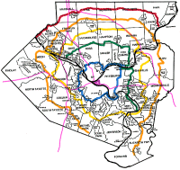

Pittsburgh/Allegheny County Belt Route System
For travelers in and around Pittsburgh and Allegheny County in Pennsylvania, there are only two main Interstate highways linking the various parts of the region. The Penn-Lincoln Parkway East (I-376) and West (I-279) is the major east-west route. I-279, affectionately but not officially called "the Parkway North," runs from downtown Pittsburgh north to meet with I-79. I-79 stays far enough west of Pittsburgh to be of minimal use for commuters other than those living near it; it just goes straight north-south so it's not of much use as a beltway. The Pennsylvania Turnpike (I-76) could be useful as the northeastern section of a beltway, but it's a toll road, and its limited access points limits its value to most small towns it passes.

|
The colors of the Belt Route system are ordered like the rainbow. The outermost belt is Red, followed by Orange, Yellow, Green, Blue, and Purple. So if you happen to cross one, you have some idea of how close you are to downtown Pittsburgh, or whether you are traveling toward or away from downtown. The Red Belt and Orange Belt do not form complete loops because they meet the outside edge of Allegheny County. The Green Belt is also an open ended path since the Blue and Yellow Belts pass so close to each other as they trace around the southwestern part of Allegheny County. Because this region is so hilly and cut by rivers, the roadways tend to twist and turn, following the ridges and valleys. Navigation can be tricky, especially when compared to towns which are laid out in a rigid grid system. Street systems in those towns are more forgiving if you miss a turn -- in Pittsburgh if you miss a turn, you may end up far from where you expected. (And we all know, no one likes to just turn around.) |
![[Red Belt sign]](Red_Belt.gif)
![[Orange Belt sign]](Orange_Belt.gif)
![[Yellow Belt sign]](Yellow_Belt.gif)
![[Green Belt sign]](Green_Belt.gif)
![[Blue Belt sign]](Blue_Belt.gif)
{kind=link}
{kind=link}
The Belt Route system gives travelers a headstart on finding shortcuts and backroads. The signage is rather complete and well-maintained, so it's OK to rely on the system to get you where you planned to go.